1. https://data.world/associatedpress/johns-hopkins-coronavirus-case-tracker, where an embedded link on its overview page have led us to find the daily csv files on git hub.
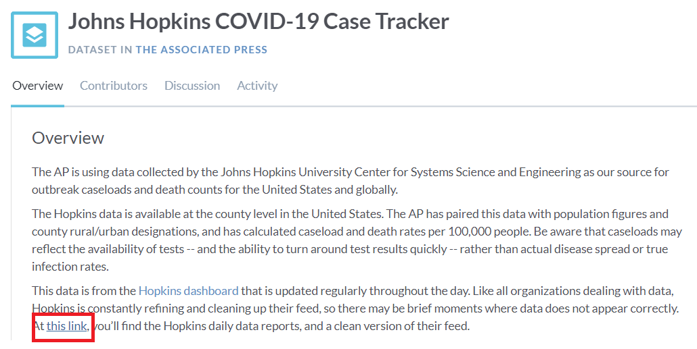 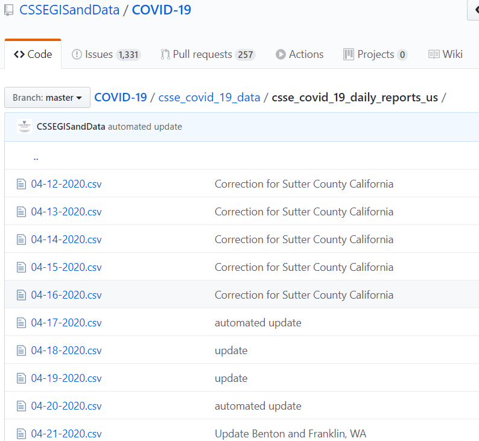2. Download the CSV files one by one: Go to each daily dataset for April 20 to May 20. You will see "Raw" button on the top right side of the dataset. Press "Alt" and then left click the "Raw" button. The whole CSV will download in your system and save to the designated folder where the jupyter notebook is also saved.
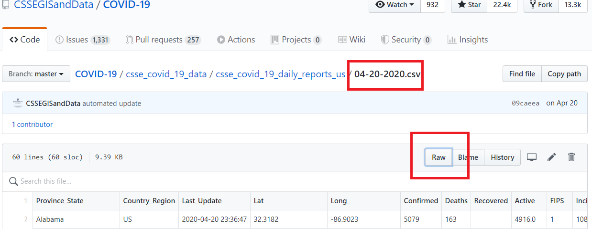The type of transformation needed for this data are executed in the following steps:
1. Use pandas, glob, and numpy modules on jupyter notebook. Pull the files using glob from the CSV file local folder location.
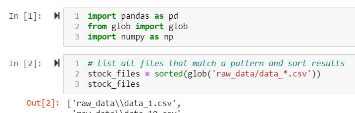2. Use a generator expression to read the files, assign(), to create a new column, and concat Dataframes
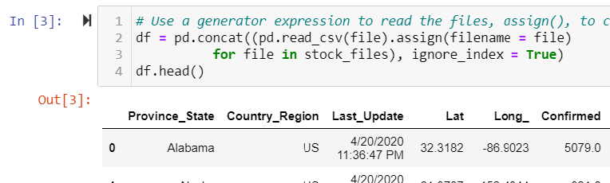3. Rename the index column from ‘Province_State’ to ‘state’ to align index data with my teammates file
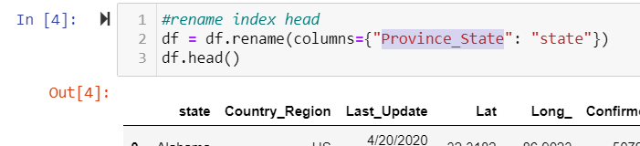4. Drop the columns that are not needed for analysis (e.g. 'filename','UID' )
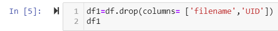5. Drop rows that does not contain data
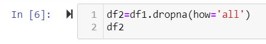6. Replace all “NaN” cells with zeros
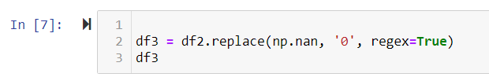7. Change the data type of columns that contains numbers from object to float64 to be able to perform numeric calculations.
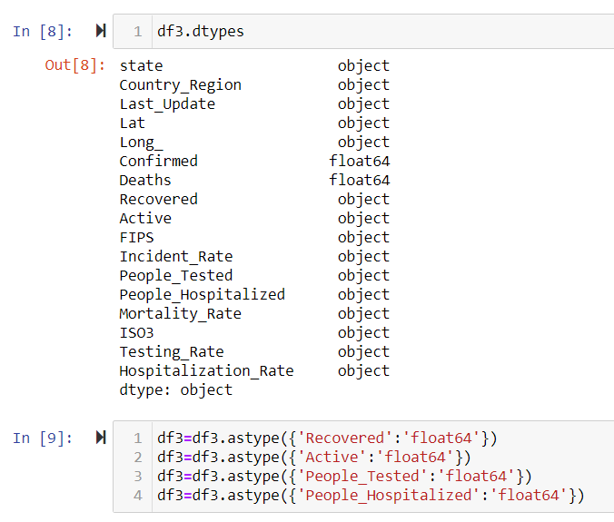8. Group the data by ‘state’ by summing up the values.
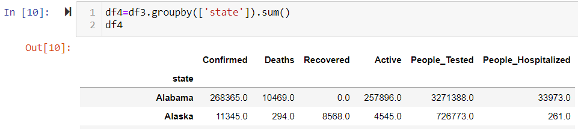9. Save the dataframe into CSV file as john_hopkins.csv
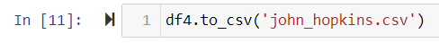10. Merge file to teammates file
1. Create etl_db in postgres
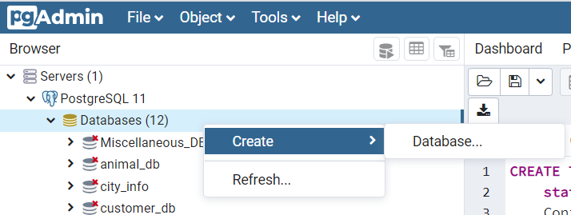 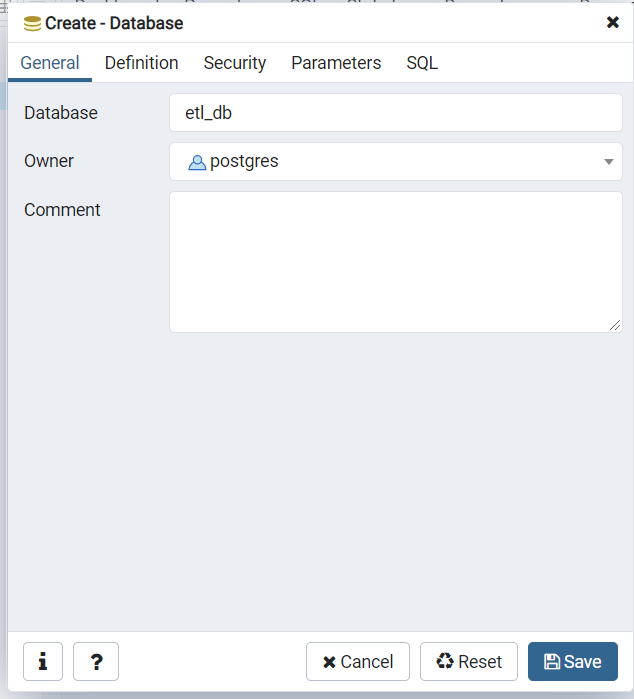